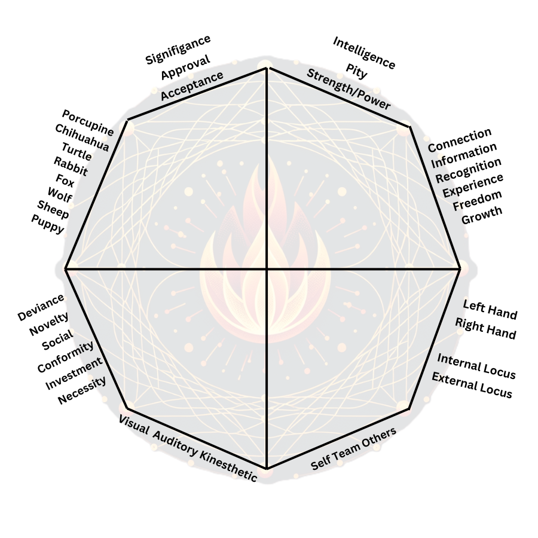

Compass Selector
Choose an Image:
Spark Compass
Shape and Color Options
Choose a Shape:
Check Mark (✔)
Circle (∘)
Plus Sign (+)
Minus Sign (-)
Choose a Color:
Size:
20
px
Highlighter
Highlighter Mode:
Highlighter Color:
Highlighter Opacity:
Erase
Erase All
Enable Erase Mode
Export & Help
Save as Image
Save as PDF
Help
